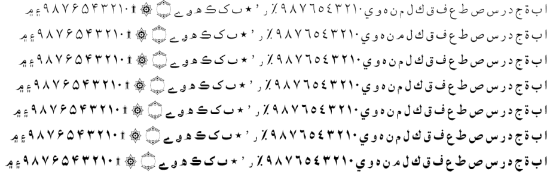

Lateef - Design
Lateef provides a “simplified” rendering of Arabic script, using basic connecting glyphs but not including a wide variety of additional ligatures or contextual alternates (only the required lam-alef ligatures). This simplified style is often preferred for clarity, especially in non-Arabic languages.
Seven weights for this typeface family are included:
- Lateef ExtraLight
- Lateef Light
- Lateef Regular
- Lateef Medium
- Lateef SemiBold
- Lateef Bold
- Lateef ExtraBold
Type Samples
Type samples showing some of the inventory of glyphs can be found here: Lateef Type Sample.
Examples of some text is shown below.
Character Set
For a complete list of characters included in Lateef, see Character Set Support.
Rendering the Allah ligature
In certain types of literature, the name Allah and words related to this name are given unique rendering. For a list of the rendering rules, see Rendering the Allah ligature.
Font Features
Alternate glyphs that are available through features are demonstrated in the Features document.